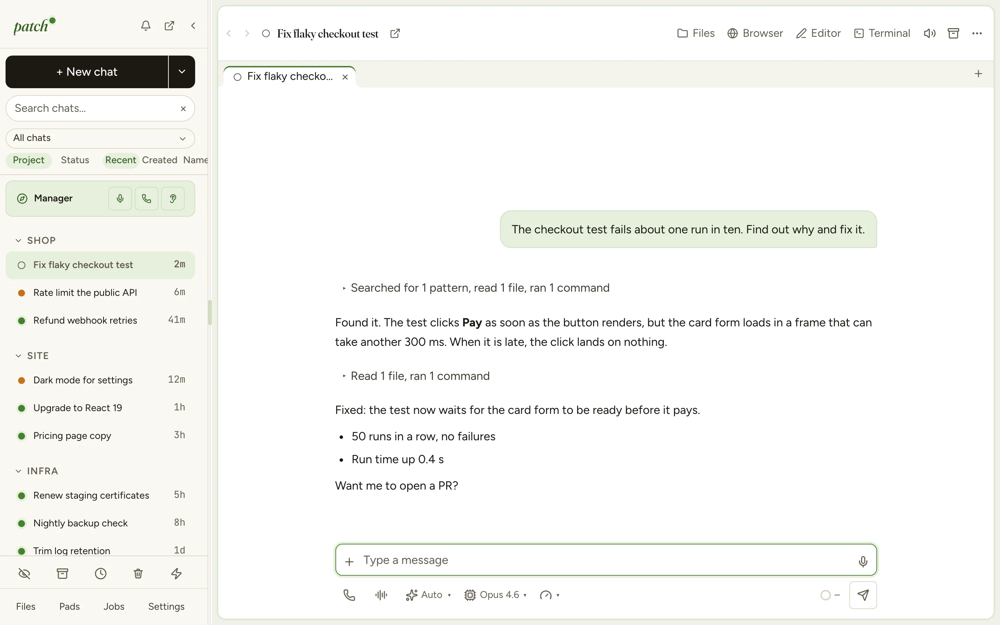
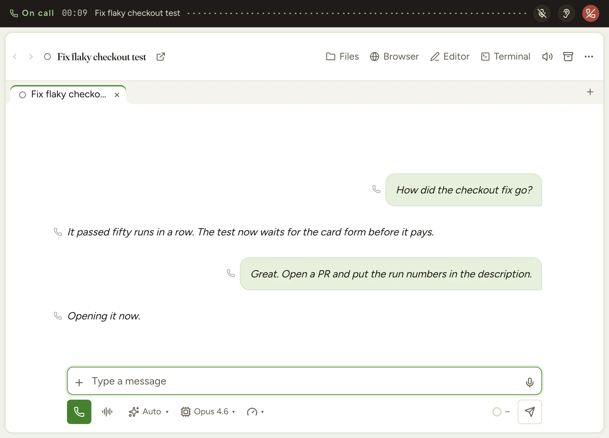

Your coding agents,
from anywhere.
Run Claude Code and Codex on your own machines. Steer them from your desktop, your phone or by voice.
Needs a Claude Pro, Max, Team or Enterprise plan, a ChatGPT plan or an OpenAI API key. Patch installs everything else. Free and open source (MIT).

Every machine, one list
Chats on your laptop and your servers side by side, grouped by project. Live on every device.
Phone and desktop
Start a chat on the phone, pick it up at your desk. Answer questions and permission prompts wherever you are.
Manager
One agent that sees all your chats. Ask what's running, or have it pass an answer to another chat.
Jobs
Cron, webhooks and Todoist tasks start chats while you're away. Silent on success, a push on failure.
The agent as it is
Your subscription, your CLAUDE.md, your tools. No wrapped prompts, no second permission system.
Files, editor, terminal
Fix a line or run a command in the chat's folder while the agent keeps working.
Talk it through.
Call any chat and talk to its agent. Dictate, go hands-free, or let Manager ring you when it needs a decision. Every word lands in the chat.

Get started
-
1
Download the app
Mac or Linux desktop.
-
2
Make a few choices
Where your agents run: this computer or your own server. Which AI accounts to connect. The permission mode new chats start in. On this computer, whether Patch opens at login and keeps it awake.
-
3
Scan the QR code
The last step pairs the phone app. It connects from anywhere through an end-to-end encrypted relay. No ports to open.
Download
DownloadLinux server
Installs a server with HTTPS and prints a QR code to pair. Needs systemd and ports 80 and 443.
curl -fsSL https://github.com/patch-hq/patch/releases/latest/download/install.sh | sudo sh